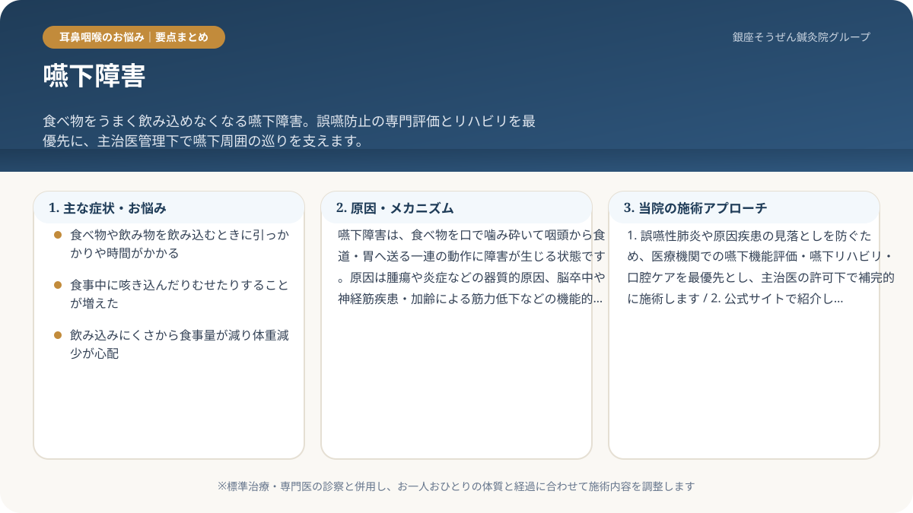

嚥下障害の鍼灸
食べ物をうまく飲み込めなくなる嚥下障害。誤嚥防止の専門評価とリハビリを最優先に、主治医管理下で嚥下周囲の巡りを支えます。
まず知っておきたい要点と改善の流れ

嚥下障害は、食べ物を口で噛み砕いて咽頭から食道・胃へ送る一連の動作に障害が生じる状態です。原因は腫瘍や炎症などの器質的原因、脳卒中や神経筋疾患・加齢による筋力低下などの機能的原因、ストレスなどの心理的原因の3つに大別されます。栄養不良や脱水、誤嚥性肺炎・窒息のリスクを伴うため、まず耳鼻咽喉科やリハビリテーション科で原因精査を受け、言語聴覚士等による嚥下訓練や口腔ケアを行うことが最優先です。
このようなお悩みはありませんか？
- ✓食べ物や飲み物を飲み込むときに引っかかりや時間がかかる
- ✓食事中に咳き込んだりむせたりすることが増えた
- ✓飲み込みにくさから食事量が減り体重減少が心配
- ✓唾液がうまく飲み込めない、または喉が乾燥しやすい
当院の施術アプローチ・改善の流れ
なぜ鍼灸で改善へ向かうのか？（作用機序の図解）
嚥下障害に対する鍼灸は、耳周囲・頸部の微小循環改善と聴覚・粘膜調整機序を通じて、お体本来の回復力を引き出します。

翳風・風池・合谷など、耳鼻咽喉領域の神経・血管と連動する経穴へ繊細にアプローチします。
首・顎まわりの深層筋緊張を緩め、内耳や粘膜周囲の滞った血流とリンパ循環を促します。
ストレスや睡眠不足で高ぶった交感神経を鎮め、音への過敏反応や粘膜の過剰反応を和らげます。
標準治療を妨げない設計で、生活支障度（THI等）の軽減と再発しにくい体調づくりを支えます。
院長YouTube解説・関連動画
嚥下障害が起こると、食べ物を飲み込むまでに時間がかかる
嚥下障害の症状は、食事中にむせることや食べ物をこぼすこと、中々飲み込めないこと、食べることに疲れること、食後に声が枯れることなどです。嚥下障害によって飲み込みにくくなることでいろいろな症状が起こるのです。
嚥下障害が起こると、食べ物を飲み込むまでの時間が長くなります。そのため、食事に時間がかかり食べることに疲れるため、進んで食べる気持ちになれず、最後まで食べきらなくなることもあります。
よく噛んで飲み込むことが必要な食べ物を避けるようになるため、柔らかいあまり噛む必要のないものを選ぶようになることも多いです。
食べ物を口の中で溜めてしまったり中々飲み込まなかったりすることで、口の中に食べかすや汚れが溜まって口臭がきつくなることもあります。
飲み込みにくさ: 食べ物や飲み物を飲み込む際に抵抗を感じること。
咳き込みや窒息: 食べ物や飲み物が誤って気道に入ることによる咳や窒息。
食べ物の口からの逆流: 食べ物が食道から口に戻ってくる感覚。
嚥下時の痛み: 食べ物を飲み込む際に痛みを伴うこと。
声の変化: 食べ物や飲み物が気管に入り、声帯に影響を与えることによる声のかすれや変化。
体重減少と栄養不良: 食べることが困難であるために起こる体重減少や栄養不良。
唾液の過剰な流出: 嚥下が困難であるため、唾液を飲み込むことができず、口から流れ出ること。
耳への痛み: 特に飲み込む際に耳に痛みを感じることがあります。
嚥下障害の改善方法は、リハビリと手術です。
ほとんどの場合、リハビリによる改善を行います。食べ物を使わず間接的に行う舌や口のトレーニングを行う間接訓練を行い、状況を見て実際に食べ物を使う直接訓練をしていきます。
直接訓練では、柔らかいゼリーなどから訓練をしていき、通常の食事ができるようにしていきます。
症状の程度が重い場合は、手術を行います。手術には、誤嚥を減らし口から食事ができるようにするための嚥下機能改善手術と食道と気道を分離するための誤嚥防止術があります。
手術を行ったとしてもすぐに食事ができるようになるわけではありません。食事をとるためには手術だけでなく術後のリハビリも必要です。
1. リハビリテーション
嚥下リハビリテーション: 専門家による特別な訓練で、嚥下の技術を改善します。これには、食べ物の飲み込み方を改善するための特定の運動や技術が含まれます。
食事: 食物の種類や食事の形状を調整して、嚥下しやすくします。例えば、液体や柔らかい食事への切り替えが含まれます。
2. 薬
嚥下障害の原因となる病気（例：GERD、パーキンソン病）を改善するための薬が使われることがあります。
3. 手術
構造的な問題や特定の疾患が原因の場合、手術による改善が必要になることがあります。
4. エスコート・フィード
重度の嚥下障害の場合、経鼻経管栄養や経皮内視鏡下胃管栄養（PEG）など、代替的な栄養摂取方法が用いられることがあります。
5. 環境調整
食事の際の姿勢を改善したり、落ち着いた環境で食事をとることで、嚥下が容易になることがあります。
6. 心理的サポート
特に嚥下障害が長期化する場合、患者や家族への心理的サポートが重要です。嚥下障害は多岐にわたる原因で発生するため、個々に応じた計画が重要です。特に、嚥下障害は食べ物の誤嚥による肺炎のリスクを高めるため、適切な介入が必要です。
1. 神経学的な病気に対する薬物
パーキンソン病: レボドパ（シネメット）やドパミン作動薬などのパーキンソン病の薬が、症状の改善に寄与することがあります。
多発性硬化症: インターフェロン製剤やグラチラメル（コパキソン）などの症状を管理する薬が使われることがあります。
2. 胃食道逆流症（GERD）に対する薬物
プロトンポンプ阻害薬（PPI）: オメプラゾール（プライロセック）、エソメプラゾール（ネキシウム）などが胃酸の分泌を抑え、食道の炎症を減少させます。
H2ブロッカー: ラニチジン（ザンタック）やファモチジン（ペプシド）が胃酸の分泌を抑制します。
3. 筋弛緩薬
筋弛緩剤: バクロフェンなどの筋弛緩薬が筋肉の緊張を和らげ、嚥下を容易にすることがあります。
4. 抗精神病薬
抗精神病薬の見直し: 嚥下障害の原因として抗精神病薬が疑われる場合、薬剤の調整や代替薬の検討が行われることがあります。
嚥下障害に対する薬での改善は、主に原因となる病気の管理に焦点を当てています。したがって、嚥下障害自体を直接改善する薬は限られています。また、薬での改善は副作用を伴う可能性があるため、医師の指示に従って慎重に使用する必要があります。
嚥下障害が起きると、口の中に食べ物が溜まったり細菌が増えたりしてしまいやすくなります。
毎食後、きちんと歯磨きをすることが大切です。入れ歯である場合は入れ歯を外して洗うことで口の中を生活に保つように心がけましょう。
口の中に細菌が増えると、歯周病や誤嚥性肺炎になる危険が高くなります。口の中を常に綺麗にすることが大切です。
脳卒中後遺症・嚥下・構音リハビリ併用のツボ図解
実際の施術ではお一人おひとりの体質・症状に合わせて選穴しますが、脳卒中後の嚥下障害・構音障害・片麻痺リハビリ併用ケアの臨床でよく用いられる代表的なツボの目安です。

📌 代表的なツボの詳細一覧表を開く（6穴） ▼
| ツボ名 | 位置の目安 | 主な狙い | セルフケアの注意点 |
|---|---|---|---|
| 百会（ひゃくえ） | 頭頂部の中央 | 覚醒度・神経可塑性・気分の安定サポート | 穏やかなタッチで頭部の緊張を緩めます。 |
| 風池（ふうち） | 後頭部の生え際のくぼみ | 項部筋の過緊張緩和・嚥下反射の補助 | 無理のない座位・側臥位で優しく刺激します。 |
| 廉泉（れんせん） | あごの下、のど仏の上のくぼみ | 舌骨上筋群・咽頭周囲の協調運動サポート | セルフでは強く押さず、専門家の施術に委ねます。 |
| 内関（ないかん） | 手首の横ジワから指3本分肘寄りの中央 | 自律神経の落ち着き・リハビリ時の不安軽減 | 健側・患側とも優しい圧で行います。 |
| 合谷（ごうこく） | 手の甲、親指と人差し指の間 | 上肢の循環促進・口腔顔面領域の遠隔調整 | 抗凝固薬服用中は内出血に注意し優しく押します。 |
| 足三里（あしさんり） | 膝の下外側、指4本分下 | 下肢の歩行リハビリ補助・胃腸機能サポート | 温めや軽いさすり刺激で循環を助けます。 |
国際査読論文の科学的エビデンス
国際的な医学データベース（PubMed・Cochrane等）で報告されている脳卒中後の嚥下障害・構音障害・片麻痺リハビリ併用ケア領域の代表的な査読済み鍼灸研究をまとめています（標準治療との併用や研究上の限界を含めて正確に掲載）。
📚 査読論文データ・PubMed出典リンクを開く（4件） ▼
| 年・研究デザイン | 対象・規模 | 主な結果 | 限界・出典 |
|---|---|---|---|
| 2013年 大規模多施設RCT | 季節性アレルギー性鼻炎 422名（ドイツ） | 7〜8週のRQLQ QOLがシャム比0.5点・薬単独比0.7点改善（P<0.001）、頓用薬使用も有意減少（P<0.001）。 | 1年目16週では群間差消失、臨床的意義は慎重評価。 Ann Intern Med (PMID: 23420231) |
| 2021年 メタ解析 | 耳鳴り 8 RCTs（n=504） | 生活支障度THI（MD -10.11, p<0.001）・TSI（MD -8.36, p<0.001）が有意改善。VASは有意差なし（p=0.06）。 | 組入れRCTの質・サンプル規模に限界あり。 Acupunct Med (PMID: 32772848) |
| 2026年 ネットワークメタ解析 | 突発性難聴 36研究（n=3,360・標準治療併用） | ステロイド等の標準治療への鍼灸併用で総有効率RR 1.19（p<0.0001）、3週間コースが推奨。 | エビデンス確実性は低く標準治療（早期ステロイド）併用が前提。 Complement Ther Med (PMID: 42918509) |
| 2023年 メタ解析 | 成人顎関節症 22 RCTs統合（n=471） | 標準治療併用で有効率RR 1.36・疼痛VAS MD -1.23と有意改善。 | GRADE確実性は低〜非常に低、さらなる高品質RCTが必要。 Medicine (PMID: 37746950) |
参考文献・出典
- 2013年 大規模多施設RCT（季節性アレルギー性鼻炎 422名（ドイツ））— Ann Intern Med (PMID: 23420231)
- 2021年 メタ解析（耳鳴り 8 RCTs（n=504））— Acupunct Med (PMID: 32772848)
- 2026年 ネットワークメタ解析（突発性難聴 36研究（n=3,360・標準治療併用））— Complement Ther Med (PMID: 42918509)
- 2023年 メタ解析（成人顎関節症 22 RCTs統合（n=471））— Medicine (PMID: 37746950)
よくある質問（FAQ）
Q. 食事のたびに激しくむせる場合、まず鍼灸を受けても大丈夫ですか？▼
Q. 病院の嚥下リハビリと鍼灸は併用できますか？▼
あわせて読まれる関連疾患（耳鼻咽喉のお悩み）
ある日突然片耳などが聞こえにくくなる感音難聴です。発症早期の耳鼻科ステロイド治療を最優先に、早期併用や回復期の耳鳴り・めまいをケアします。
実際には音がないのに耳の中で雑音が聞こえる状態です。耳の血流や自律神経・脳の過敏さを整えるケアで軽減を目指します。
喉の奥の扁桃が肥大し、いびきや呼吸障害・嚥下時の違和感が生じる状態です。耳鼻科での評価と治療を最優先に、安定期の呼吸環境と体調を支えます。
唾液の分泌が減り口の中が乾燥して粘つきや飲み込みにくさを生じる状態です。ツボ施術と自律神経調整で潤いを支えます。
末梢神経障害やむくみなど全身症状を呈するPOEMS症候群に対し、専門医治療を最優先に安定期の穏やかな補完ケアを行います。
リンパ管が袋状に膨らむ巨大リンパ管奇形に対し、専門医管理最優先・病変部刺鍼禁忌を守り安定期の全身ケアを支援します。
CLINICAL RECOVERY CASES
✨ 実際の臨床改善事例・回復経過を見る
銀座本院をはじめ各院での実際の改善事例を症状別に絞り込んでご確認いただけます。
おひとりで悩まず、まずはご相談ください
銀座本院・川口・大宮・横浜・博多・田無の各院でご予約を承っております。